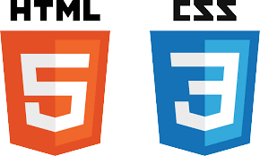
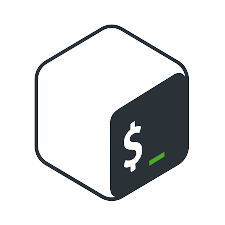

Mon Objectif Professionnel:
Actuellement en bachelor IT car je souhaite poursuivre ma voie professionnel dans le domaine de
l'informatique.
A l'heure d'aujourd'hui, je ne sait pas encore si je vais aller dans le développement ou bien
l'intelligence artificielle.
J'espère que cette année va me permettre de faire mon choix pour pouvoir être épnanouie dans mon
avenir professionnel et à l'avenir, être utile pour la sociétée.
Informations personnelles
Age: 21 ans
Mail: kevinpm13015@gmail.com
Téléphone: 0624667644
Adresse: 28 Boulevard de la Padouane, HLM les Aygalades
France, 13015 Marseille
Expériences Professionnels
Développeur Web (Stage 2 semaines)
2023
Fiscalyse, Marseille
Web Master (Stage 2 semaines)
2023
Louisa Neyssa, Marseille
Administrateur Système réseau (Stage 2 semaines)
2023
SERAMM, Marseille
Mes Etudes/Formations
Stagiaire de la Formation Professionnelle
Ecole de la Deuxième Chance, Marseille
2022-2023
DUT Génie Electrique informatique industrielle (1ère Année)
IUT St Jérome, Marseille
2020-2021
Baccaulauréa Général et Technologique STI2D
Lycée St Exupéry, MarseilleObtention en 2020
Mes Compétences
HardSkills
 Linux
Linux
- Cisco
- HTLM CSS
- Bash
- WordPress